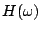
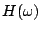
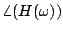

In the previous chapter we saw that a delay network can have a non-uniform frequency response--a gain that varies as a function of frequency. Delay networks also typically change the phase of incoming signals variably depending on frequency. When the delay times used are very short, the most important properties of a delay network become its frequency and phase response. A delay network that is designed specifically for its frequency or phase response is called a filter.
 |
In block diagrams, filters are shown as in Figure 8.1 (part a). The curve shown within the block gives a qualitative representation of the filter's frequency response. The frequency response may vary with time, and depending on the design of the filter, one or more controls (or additional audio inputs) might be used to change it.
Suppose, following the procedure of Section 7.3, we put
a unit-amplitude, complex-valued sinusoid with angular frequency  into a filter. We
expect to get out a sinusoid of the same frequency and some amplitude, which
depends on
into a filter. We
expect to get out a sinusoid of the same frequency and some amplitude, which
depends on  . This gives us a complex-valued function , which is called the
transfer function
of the filter.
. This gives us a complex-valued function , which is called the
transfer function
of the filter.
The frequency response is the gain as a function of the frequency
 . It is is equal to the magnitude of the transfer function. A
filter's frequency response is customarily graphed as in Figure
8.1 (part b).
An incoming unit-amplitude sinusoid of frequency
. It is is equal to the magnitude of the transfer function. A
filter's frequency response is customarily graphed as in Figure
8.1 (part b).
An incoming unit-amplitude sinusoid of frequency  comes out
of the filter with magnitude
comes out
of the filter with magnitude  .
.
It is sometimes also useful to know the phase response of the filter, equal
to
. For a fixed frequency  , the filter's
output phase will be
radians ahead of its input
phase.
, the filter's
output phase will be
radians ahead of its input
phase.
The design and use of filters is a huge subject, because the wide range of uses a filter might be put to suggests a wide variety of filter design processes. In some applications a filter must exactly follow a prescribed frequency response, in others it is important to minimize computation time, in others the phase response is important, and in still others the filter must behave well when its parameters change quickly with time.